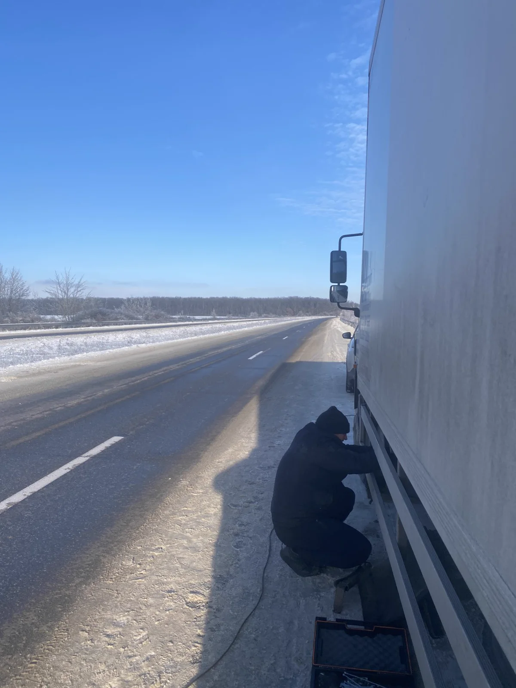

Кому доступна допомога
Вантажним автомобілям, тягачам, причепам, напівпричепам і спецтехніці після уточнення ситуації телефоном.
Приймаємо термінові звернення телефоном. Можливість виїзду і ремонту на місці погоджується після уточнення несправності.
Вантажним автомобілям, тягачам, причепам, напівпричепам і спецтехніці після уточнення ситуації телефоном.
Дніпро та Дніпропетровська область. Інші міста погоджуються окремо після попереднього дзвінка.
Місце поломки, марку і модель, тип транспорту, чи може авто рухатися, короткий опис несправності.

Опишіть ситуацію і назвіть точне місце.
Повідомте марку, модель, тип техніки та ознаки несправності.
Можливість ремонту на місці визначається після уточнення.
Термінові звернення приймаються телефоном. Виїзд і можливість ремонту на місці погоджуються після уточнення ситуації.
Зателефонуйте або напишіть у Viber. Повідомте місце поломки, марку та модель автомобіля, характер несправності й чи може транспорт рухатися самостійно.
Можливість, час та умови виїзду погоджуються телефоном.